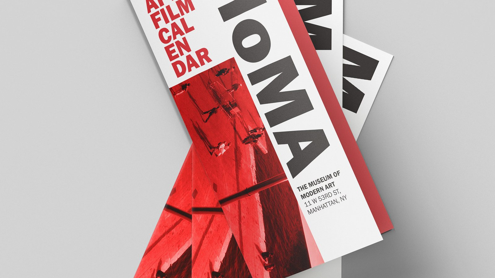
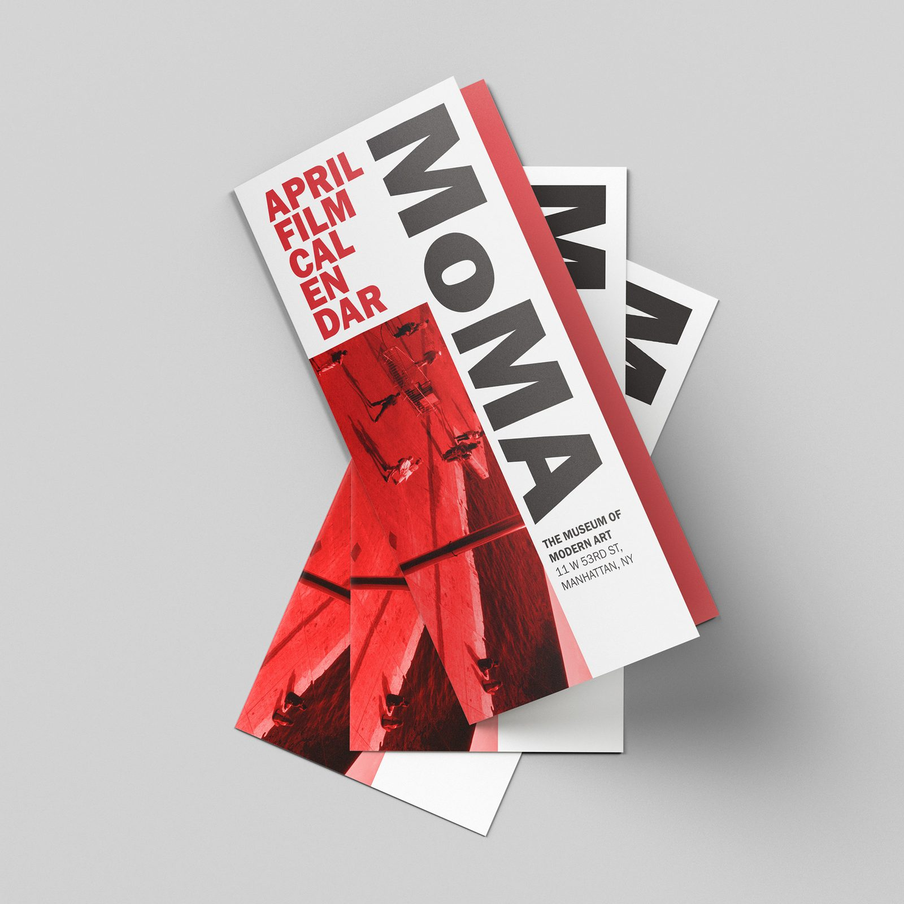
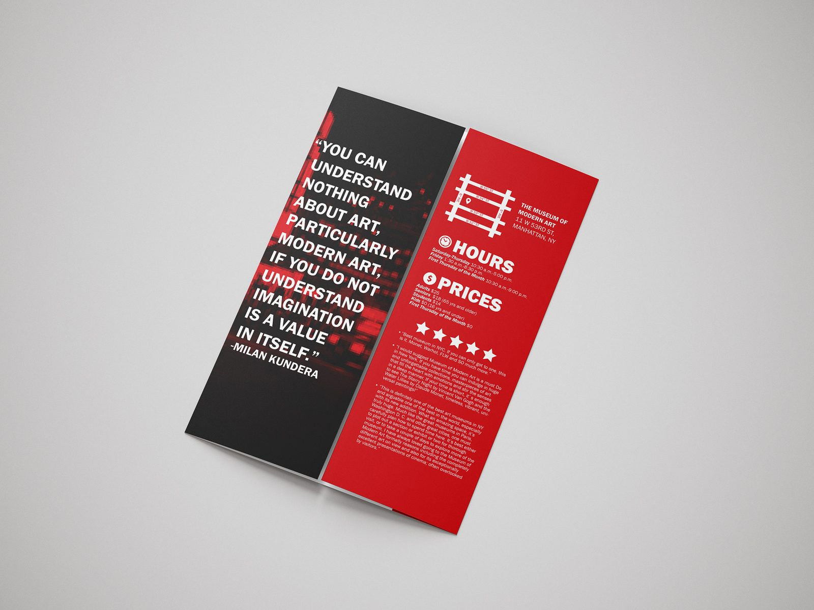
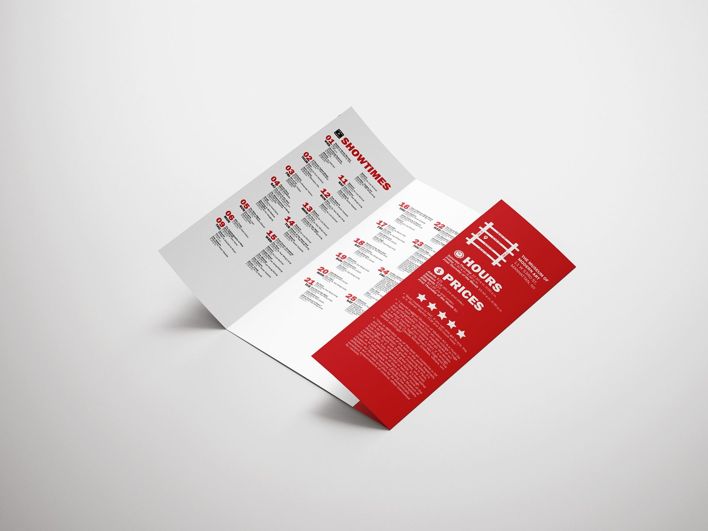
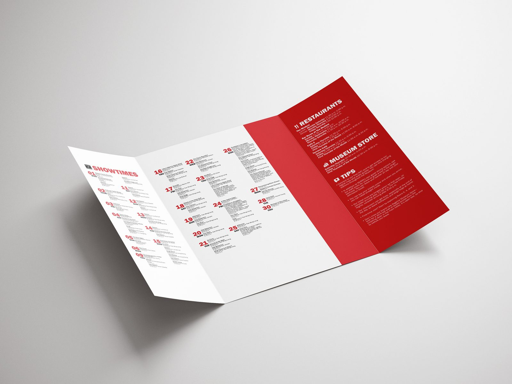
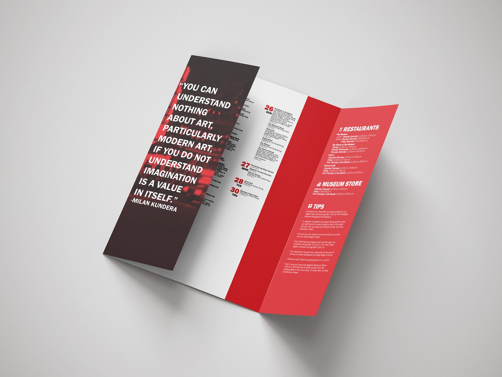

Tri-fold Brochure / Print
A bold tri-fold film calendar for the Museum of Modern Art.

- Role
- Design & Layout
- Discipline
- Print / Editorial
- Format
- Tri-fold brochure
- Tools
- InDesign
The brief
A tri-fold film calendar for MoMA needed to feel bold and distinctly cultural — organizing dense schedule information while still stopping people in their tracks.
My approach
I used a high-contrast red, black, and white system anchored by confident typography. A striking quote panel pulls readers in, while a tightly structured grid keeps the dense calendar legible across every fold.





The outcome
An editorial piece that balances impact and information — equal parts poster and program.